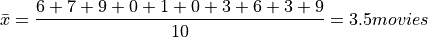
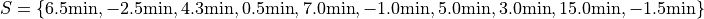
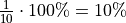
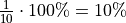
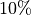
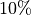

Point Estimation#
A sample of data is characterized by point estimates of sample statistics.
Definitions#
Observation#
- Symbolic Expression

- Definition
An Individual; A single piece of data.
The subscript i is called the index of the observation. If the sample is ordered, the index corresponds to the order in which the observation was made, i.e.  is the first observation,
is the first observation,  is the second observation, etc.
is the second observation, etc.
Sample#
- Symbolic Expression

- Definition
A collection, or set, of observations.
The number of samples, n, is called the sample size.
Frequency#
- Symbolic Expression

- Definition
The number of times a particular observation occurs in a sample of data.
Outlier#
- Definition
An unusual observation.
What we mean by “unusual” depends on the data. GEnerally speaking, we mean something that roughly approximates, “a data that is far outside what is expected”.
If we are measuring numerical data, this might mean an observation that is much, much greater than or much, much less than the majority of the data.
If we are measuring categorical data, this might mean an observation is in infrequent.
Measures of Centrality#
Measures of centrality, sometimes known as measures of central tendency, describe where the “center” of a sample of data is located. What we mean by “center” is, in some sense, left to the reader’s intuition. A good analogy for the statistical conception of centrality comes from the field of physics: the idea of center of mass. The center of mass is the balance point, the point around which a body of mass is distributed so the torque generated by gravity is held is equilibrium. In this analogy, the mass is the sample of data. Centrality in a sample is a measure of its “center of mass”, so to speak.
Arithmetic Mean#
The arithmetic mean is a sample statistic you have probably seen before; what you probably didn’t know is it is not the only way of calculating the mean. You will see in the next few sections alternate ways of calculating a quantity that is meant to represent the mean of a sample. Each of these sample statistics represents a way of quantifying the notion of “central tendency”
Before getting to the good stuff, let’s review the arithmetic mean. There are two equivalent ways of defining the sample mean.
Sample Formula#
If the sample of data is specified as a set or list of data as in the following,

Then the sample arithmetic mean can be calculated with the formula,

This is known as the sample mean formula for the arithmetic mean.
- Example
Suppose you survey 10 people and ask them how many of the 11 full-length, major motion picture Star Wars movies they have seen. Suppose the sample S of their responses is given below,

Find the average number of Star Wars movies seen by this sample of people.
Applying the sample mean formula,

Note
Notice in this example the sample mean does not correspond to an observable value in the sample.
The sample mean is not even a possible value of an individual observation in this sample (unless we allow for people who stopped watching half-way through one of the movies).
Interlude#
Suppose in a sample of data S, some of the observations have identical values, such as in the following dataset that represents the age in years of an A.P Statistics student,
S = { 16, 16, 17, 18, 16, 17, 17, 17 }
Before moving on to calculate the sample mean, let us represent this sample S in an equivalent way using a table,
|
|
16 |
3 |
17 |
4 |
18 |
1 |
This way of representing a sample of data, where the first column stands for the value of the observation and the second column that stands for the frequency of that observation, is known as a Frequency Distributions.
(We will study frequency distributions in more detail in the next section.)
Let us move on to the task at hand: calculating the sample mean. In this case, the formula for the arithmetic mean gives,

If we collect all the terms in the numerator that are like, we may rewrite this as,

Notice the first factor of each term in the numerator is simply frequency of that observation in the frequency distribution table, whereas the second factor is the actual value of the observation. In other words, each term of the numerator is of the form,

This recognization leads the following formula that comes in handy when sample distributions are given in terms of frequency distributions
Frequency Formula#
If the sample of data is specified as a frequency distribution as in the following,
x |
f(x) |
|---|---|
x 0 |
f( x 0) |
x 1 |
f( x 1) |
… |
… |
x n |
f( x n) |
Then the sample arithmetic mean can be calculated with the formula,

- Example
TODO
|
|
?? |
? |
?? |
? |
?? |
? |
Geometric Mean#
The geometric mean is an alternate way of defining the mean of a sample data.
The geometric mean is defined as,

TODO
Geometric vs. Arithmetic Mean#
TODO
The Moral of the Story#
There are other variants of the mean that sometimes appear in the literature. For example, when dealing with certain types of data, the harmonic mean is often the most appropriate measure for central tendency.
We talk about these other variants only to make you aware of them. In this class, we will exclusively be dealing with the arithmetic mean.
Nevertheless, before moving on, there is an important point to make: central tendency is not an absolute measure of a sample; its value depends on the way we calculate it.
This feature of statistics may be surprising. The amount of choice we have in how we go about measuing the population from a sample of data may seem as if it should not lead to a rigorous and well defined branch of mathematics.
It is true the choice we make between using the geometric mean and the arithmetic mean is to some extent arbitrary; there is not a particularly good reason for preferring one over the other, besides convention (and certain other properties that make calculations easier, as we shall see in later chapters). It is not important which one we choose; it is only important that we choose one and stick with it.
One of the key idea of statistics is, not that we should rid ourselves of assumptions and biases (an impossible task), but that we should be aware of our assumptions and biases. Otherwise, without awareness, those assumptions and biases may show up and influence the data.
Categorical Measures#
The Arithmetic Mean and the Geometric Mean only apply if the data being measured is quantitative data. If, however, the data being measured is categorical is nature, we do not have these tools available to us. Instead, we use the next two measures of central tendency to get a picture of the distribution shape.
Mode#
- Definition
The mode is the most frequent of observation in a sample of data.
TODO
Sample Proportion#
- Definition

The sample proportion is the ratio of the number of individuals in the sample that share a certain property to the total number of individuals in the sample. In other words, it is the frequency of an observation divided by the the number of observations.
Measures of Location#
In the Measures of Centrality, we drew the analogy between mass and a sample. Specifically, we proposed the following relation,
Center of mass is to matter as measures of centrality are to a sample of data.
Extending the analogy, the center of mass is not enough to distribution of mass in a body. We also need information about the volume (e.g.  ) enclosed by the body and the density of the matter (e.g.
) enclosed by the body and the density of the matter (e.g.  ) it contained.
) it contained.
Likewise, measures of centrality do not tell us the whole story about a sample. We need additional information in order to get a clearer picture of the distribution of data. Measures of location are a type of sample statistics that provide
Percentiles#
- Definition
If a sample of data has been ordered from lowest to highest, then the p th percentile is the smallest value such that no more than p percent of the data is less than that value.
From the definition, it should be clear percentiles only have meaning with respect to quantiative data. To order a sample of data , the relation  must have meaning. This requires the data to be numerical. A percentile is often referred to in the technical literature as an order statistic for this reason.
must have meaning. This requires the data to be numerical. A percentile is often referred to in the technical literature as an order statistic for this reason.
You have probably encountered the concept of percentiles at some point in other classes and may have developed an idea of what it represents. If not, the meaning of a percentile should be intuitive and straight-forward; it is a measure of how much of a distribution lies below a given observation.
Before giving a more formal definition of the percentile, let’s consider a simple, motivating example.
- Example
Suppose you were conducting a study to determine how many minutes late or early the average city bus arrived versus its scheduled time. You obtained the following data set, measured in minutes,

Note in this sample we have  total samples. A single observation accounts for  of the sample.
total samples. A single observation accounts for  of the sample.
To find the percentiles, we need to order the sample from lowest to highest,

Let’s look at a few individual observations.
 is called the 5 th order statistic, because it occupies the fifth place of the ordered sample.
is called the 5 th order statistic, because it occupies the fifth place of the ordered sample.
Below , we have the observation  . The percentage of the sample below this point is
. The percentage of the sample below this point is  . Adding to this the percentage of the sample the observation
. Adding to this the percentage of the sample the observation  represents, i.e. , we see the observation represents the 50 th percentile.
represents, i.e. , we see the observation represents the 50 th percentile.
Likewise,  is called the 6 th order statistic and by similar logic, represents the 60 th percentile of the sample.
is called the 6 th order statistic and by similar logic, represents the 60 th percentile of the sample.
Continuing in this manner, we can find the 10 th, 20 th, 30 th, … , up to the 100 th percentile. Notice because the sample only has datapoints, there are only 10 percentiles, or order statistics, that can be found directly (exactly). However, scroll back up and re-read the defintion we have given of the percentile, keeping in mind the point just raised.
The definition of the percentile is phrased so as to give meaning to percentiles such as the 25 th and 75 th percentile. When we say “…*the smallest value such that no more than*..”
Median#
TODO
Quartiles#
TODO
Measures of Variation#
Measures of variation characterize the spread and dispersion of a sample of data.
Motivation#
Consider these two samples of data  and
and  ,
,


If we apply the Sample Mean Formula to S_1, we get,

If we apply the Sample Mean Formula to S_1, we get,

In bothcases, we wind up with the same sample mean. If we summarizing these two samples of data to audience and the only information we gave them was the sample mean, they might erroneously conclude the samples were the same.
However, refering to the actual observations that make up either sample, it is clear the samples are not the same.
Clearly, we need some other type of sample_statistic to differentiate these two samples of data.
In other words, the sample mean is not enough to completely describe a sample of data. In the language of mathematics, we say the sample mean is “necessary, but not sufficient” to determine a sample of data.
But what exactly is different about these two samples? If we plot the samples separately on a number line and compare, we can see what is going on more clearly,
(INSERT PICTURE)
Fom the picture, it is obvious that is more spread out around the mean than . To put it another way, is more tightly clustered around the mean than . This spread or clustering is referred to as variation.
The goal of the next few sections is to come up with a way of quantifying and measuring this variation.
Interquartile Range#
First up, we have the interquartile range.
TODO
Rule of Thumb for Outliers#
(TODO: three times IQR)
Absolute Variation#
TODO
Variance#
Motivation#
Let us consider a rather contrived example that is nevertheless instructive. Suppose S a sample of data.represents TODO
Standard Deviation#
TODO
Measures of Comparision#
Coefficient of Variation#

Z Score#

Outliers#
TODO
Rule of Thumb#
TODO
Chebyshev’s Theorem#
TODO